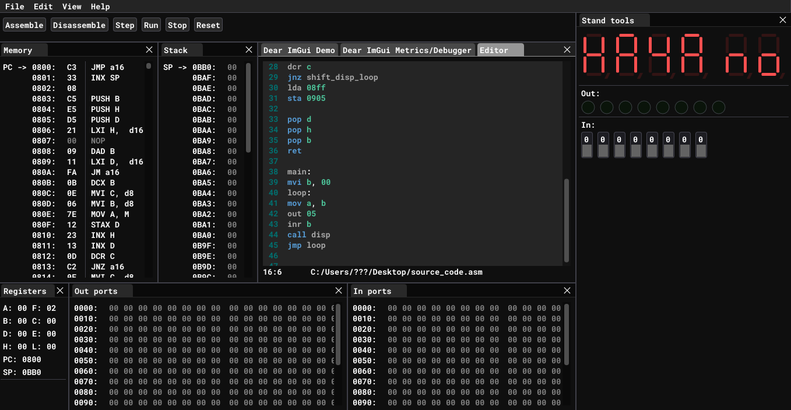

Emulator
A fast & simple KR580 (i8080 clone) CPU emulator.
This whole emulator is based on UMPK-80. UMPK-80 is an educational hardware for understanding of cpu workflow. UMPK-80 has two types of memory: RAM and ROM. More information shown in the table below.
| Address | Type | Description |
|---|---|---|
| 0x0000-0x07FF | ROM | "Monitor" program and system procedures |
| 0x0800-0x0B80 | RAM | User memeory |
| 0x0B80-0x0BB0 | RAM | Stack |
| 0x0BB1-0x0BFF | RAM | System RAM used my "Monitor" program |
| 0x0C00-0x0FFF | RAM | User memory and system extensions |
"Monitor" is a program which is used as simple operating system. This program lets hardware implement interaction with a user. "Monitor" program is located in ROM.
RAM is splited into several sections. Fully "free" for writing user programs are user memory section 0x0800-0x0B80 and 0x0C00-0x0FFF. Access to other sections is not recommended.
Emulator has following user interface:

User interface
It has eight differens windows: